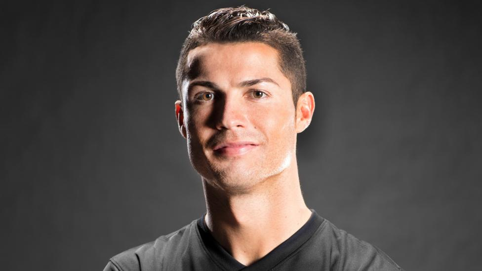

-

Kehidupan awal
Kehidupan awal Ronaldo lahir di Madeira, Portugal, anak dari Maria Dolores dos Santos Aveiro dan José Dinis Aveiro. Dia memiliki kakak laki-laki bernama Hugo, dan dua kakak perempuan, Elma dan Liliana Cátia. Liliana Bekerja sebagai penyanyi dengan nama panggung "Ronalda" di Portugal.[butuh rujukan] Diberi nama keduanya "Ronaldo" dipilih dari mantan Presiden AS Ronald Reagan, yang jadi aktor favorit ayahnya.[3] Nenek buyutnya Isabel da Piedade berasal dari Cape Verde.[4] Keluarganya penganut Katolik taat dan hidup dalam kemiskinan, Ronaldo tidak punya mainan dan berbagi kamar dengan saudara-saudaranya. Pada usia 14, Ronaldo setuju dengan ibunya untuk fokus sepenuhnya pada sepak bola.

Ini Adalah Profil P
Paulo dybala Paulo Bruno Exequiel Dybala lahir pada tanggal 15 November 1993 di Laguna Larga, Cordoba, Argentina.
30 Agustus 2020